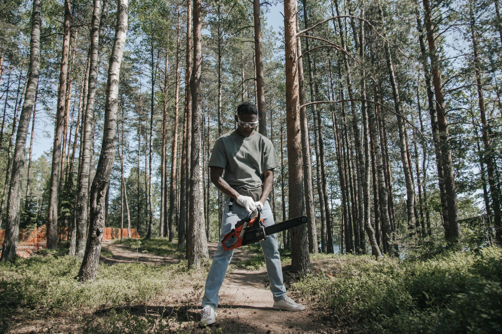
01 / 04
Le forestier
« Sur un chantier, une machine à l'arrêt, c'est une journée perdue. »
Exemple de témoignage
Tronçonneuses, perches élagueuses, chaînes et affûtage.
SACRI, Abidjan
ForêtPlantationsEspaces vertsIndustrie
01Notre histoire
Fourniture industrielle, transmission, pneumatique, outils de coupe, construction métallique. Un groupe ivoirien qui équipe la forêt, les plantations et les usines depuis plus d'un demi-siècle.
Naissance de SAFIR : scies à ruban et outils de coupe pour les industries du bois.
Trans-Roulements ouvre la voie de la transmission industrielle.
PST-CI se spécialise dans le pneumatique et l'hydraulique.
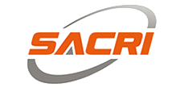
SACRI s'installe en Côte d'Ivoire. Elle devient le représentant exclusif de STIHL dans le pays.
DEFI rejoint l'histoire : construction métallique, tuyauterie, chaudronnerie.
SACRI est certifiée ISO 9001 et garde un cap : satisfaire ses clients, durablement.
02Ceux que nous équipons

01 / 04
« Sur un chantier, une machine à l'arrêt, c'est une journée perdue. »
Exemple de témoignage
Tronçonneuses, perches élagueuses, chaînes et affûtage.
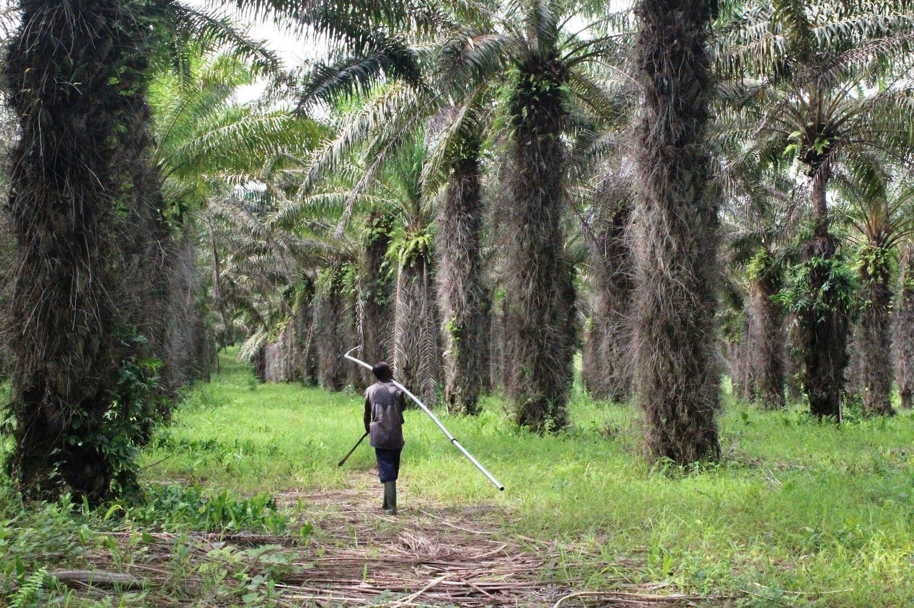
02 / 04
« Avant la campagne de traitement, mon atomiseur passe à l'atelier. »
Exemple de témoignage
Atomiseurs, motobineuses, couteaux à saigner et à greffer.
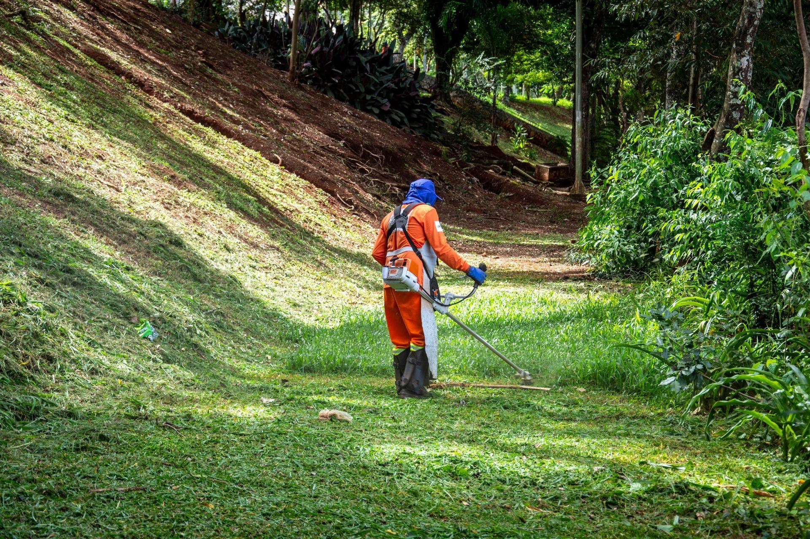
03 / 04
« Mes équipes travaillent toute l'année. Les pièces doivent suivre. »
Exemple de témoignage
Débroussailleuses, tondeuses, souffleurs.
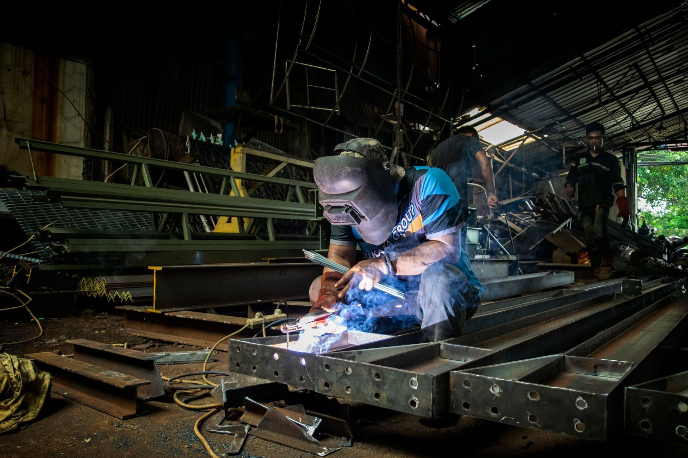
04 / 04
« Transmission, hydraulique, levage : un seul interlocuteur, c'est du temps gagné. »
Exemple de témoignage
Transmission, air comprimé, levage, sécurité, construction métallique.
03La promesse atelier
Grande disponibilité en pièces de rechange, service après-vente assuré par des techniciens qualifiés et dévoués, ateliers spécialisés : flexibles, transmission, tondeuses, levage.
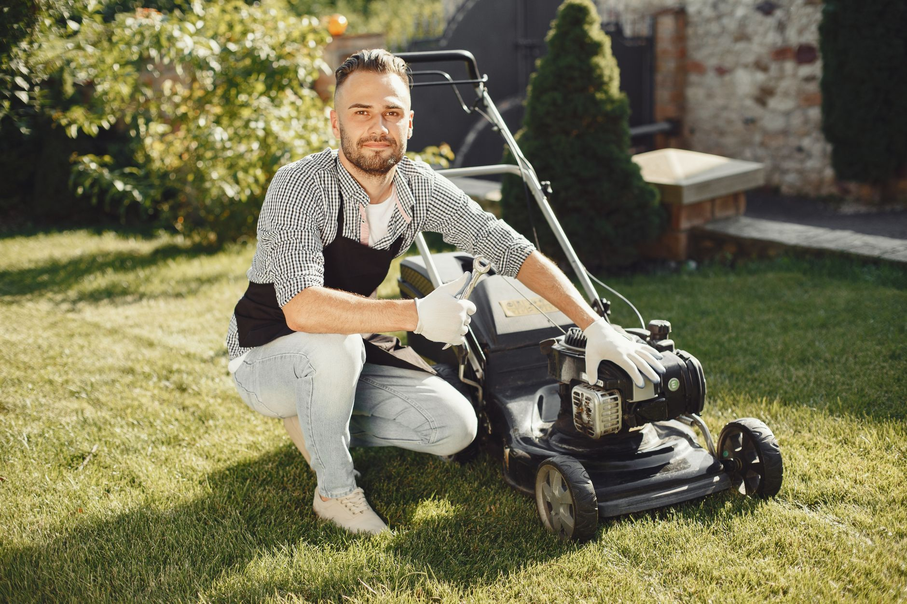
Votre machine arrive à l'atelier avec son histoire : ce qui ne va pas, depuis quand.
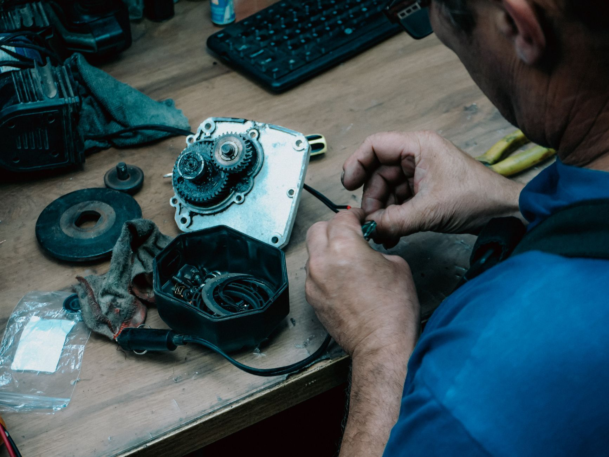
Un technicien qualifié démonte, mesure et trouve la cause, pas seulement le symptôme.
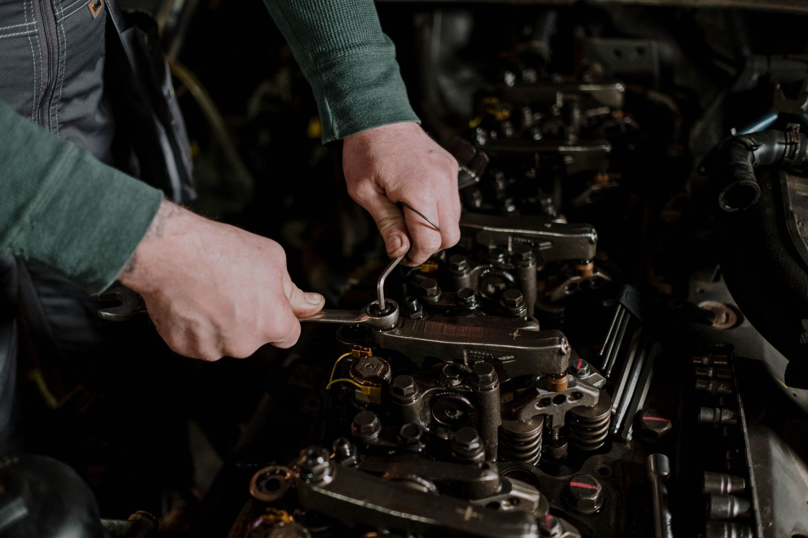
Avec des pièces d'origine, disponibles en magasin.
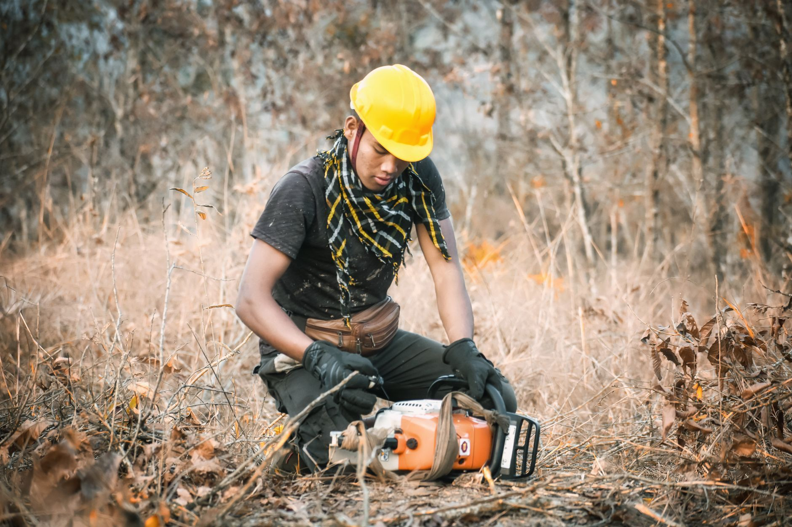
La machine vous est rendue prête au travail, réglée et contrôlée.
04Le groupe en chiffres
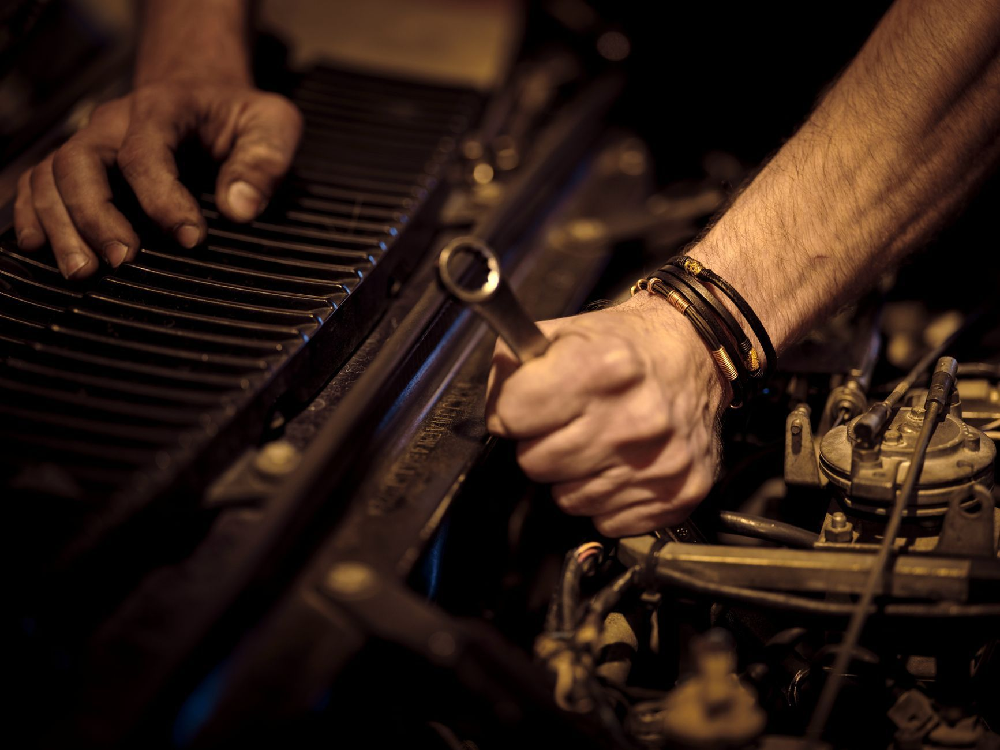
Proposition
05SACRI Academy
Un programme en trois niveaux pour former les mécaniciens qui entretiennent vos machines, de l'entretien courant au diagnostic.
Voir le programme06Marques distribuées


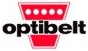


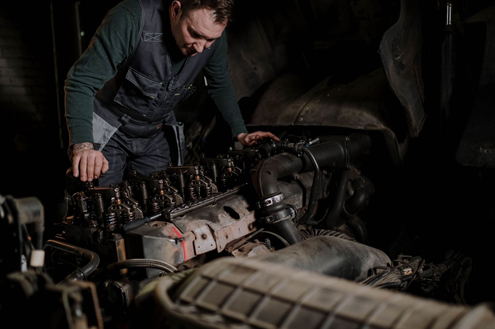
Une machine à choisir, une pièce à trouver, un entretien à prévoir : écrivez-nous, ou réservez votre passage à l'atelier.